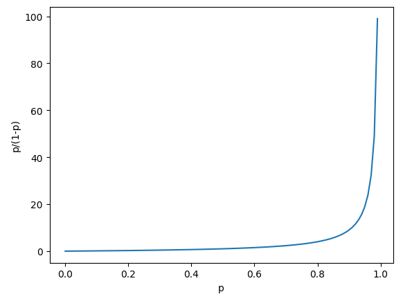

| list comprehension(‘리스트 컴프리헨션’)에 대해서 알아 보겠습니다. list comprehension은 짧고 간결하게 리스트를 생성할수 있는 문법이지만, 가끔 파이썬을 사용하다보니 매번 새롭게 느껴집니다. 아래는 odds(오즈비)를 그래프로 그린 코드입니다. p가 0.5를 넘어서면서 오즈가 급격하게 커지고 p가 1에 가까워질수록 odds는 천문학적으로 커지고 있는 그래프입니다. import numpy as np
import matplotlib.pyplot as plt np.random.seed(5) probs = np.arange(0, 1, 0.01) odds = [p/(1-p) for p in probs] plt.plot(probs, odds) plt.xlabel('p') plt.ylabel('p/(1-p)') plt.show() 결과)  이 문장을 리스트 컴프리헨션(list comprehension) 이라고 부릅니다. odds = [p/(1-p) for p in probs] 같은 의미를 일반적인 for문으로 풀어쓰면 이렇게 됩니다 odds = [] # 빈 리스트를 먼저 만든다
for p in probs: # probs에 있는 값을 하나씩 p라는 이름으로 꺼낸다 값 = p / (1 - p) # 그 값으로 계산 odds.append(값) # 계산한 값을 리스트에 추가 즉, 다음과 같습니다 odds = [ 변수를 이용한 계산식 for 변수 in 반복할 대상 ] |